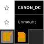

Somebody Should Set The Title For This Chapter!
التخزين
يمكن نشاط السجل من حفظ واسترجاع باستعمال واجهة استخدام سكر.لإظهار السجل، أنقر على أيقونة السجل في النافذة الرئيسية.
التخزين الداخلي
يمكن للجهاز تخزين عدد معين من الملفات في ذاكرة فلاش ذات سعة 1GB.عليك استعمال XO بالحفاظ على مساحة كافية في الذاكرة لإضافة ملفات جديدة.يمكنك حذف بعض العناصر باستعمال نشاط سجل.
لإفراغ الذاكرة للمزيد من الملفات:
- في النافذة الرئيسية، أنقر على أيقونة سجل.
- ضع مؤشر الفأرة فوق أيقونة السجل لمعرفة حجم الذاكرة المتوفر.
- ابحث عن الملفات التي ترغب في حذفها مثل الملفات القديمة أو الملفات كبيرة الحجم التي قمت بنسخها الى مكان آخر.
- ملفات الفيديو والصوت وبعض ملفات PDF او الكتب الالكترونية عادة ما تكون أكبر حجما من الملفات النصية لنشاط الكتابة أو الصور الثابتة.
- نشاط تصفح الأنترنت يمكنه أن يقوم بتحميل عدة نسخ من نفس الملف اذا لم تتحقق من أنك حملت الملف من قبل.إحذف الملفات المكررة للحفاظ على مساحة الذاكرة.
- إختر ملفا للحذف، بالنقر بالزر الأيمن على الأيقونة والنقر على إحذف.
التخزين الخارجي
يمكنك استعمال بطاقة الذاكرة SD أو USB لحفظ واسترجاع الملفات.بطاقة الذاكرة SD عبارة عن بطاقة بلاستيكية مربعة بحجم 3.2سنتيمتر طول و2.4 سنتيمتر عرض. وتستعمل في العديد من أجهزة التصوير الرقمية لحفظ الصور.جهاز XO يحتوي على قارئ لبطاقة الذاكرة.
الأسهل استعمالا هي ذاكرة USB، بعض الأنواع تحتوي على مؤشر ضوئي خارجي، يدل على أن البيانات تنتقل من أو الى الكمبيوتر.
هناك ثلاث منافذ USB على الجهاز يمكن استعمالها مع ذاكرة USB. واحدة على يسار الشاشة وإثنين على اليمين.كلها محمية بالهوائي عندما يتم قفل الجهاز.
استعمال الذاكرة للتسجيل
- قم بإدخال ذاكرة USB أو بطاقة الذاكرة SD في مكانها المخصص.
- إذهب الى السجل لتجد أيقونة USB او SD على اليسار.
لنسخ ملف من السجل الى ذاكرة USB او بطاقة الذاكرة SD
- انقر على أيقونة العنصر في السجل وقم بسحبه الى ذاكرة USB/SD
لنسخ ملف من الذاكرة USB او بطاقة الذاكرة SD
- في البداية أنقر على أيقونة USB/SD.
- قم بسحب العناصر من ذاكرة USB او SD إلى أيقونة السجل.
إخراج ذاكرة USB
ضع مؤشر الفأرة فوق أيقونة USB ثم اضغط على إخراج.عندما تختفي أيقونة USB، يمكنك إخراج الذاكرة بكل أمان.
إدخال بطاقة SD
يوجد منفذ ذاكرة SD أسفل الشاشة، تحت زر التشغيل.ستحتاج أن تقوم بإدارة الشاشة للوصول الى المنفذ.
إخراج بطاقة SD
ضع مؤشر الفأرة فوق أيقونة SD ثم اضغط على إخراج.
عندما تختفي أيقونة SD، يمكنك إخراج الذاكرة بكل أمان. إدفع البطاقة الى فوق باصبعك لإخراجها.